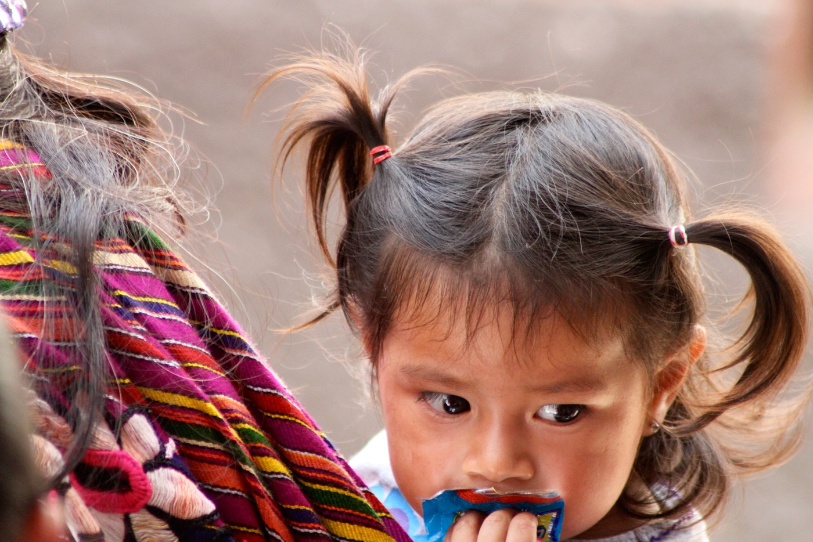

En la aceptación de una nueva sociedad pluricultural, es preciso reconocer la importancia de la educación a la hora de ofrecer unas respuestas adecuadas a las necesidades sociales. Por ello, la educación en la diversidad no ha ser fuente de enfrentamientos, sino un componente que enriquezca la cultura agregando el factor y uso de nuevas tecnologías. Ello exige que su nivel de formación intercultural sea elevado. El hecho de que los alumnos de las diferentes áreas de la UIMQROO procedan y conviven con culturas diferentes, lejos de suponer un problema, debe plantearse como una buena oportunidad para educar a los sujetos en valores democráticos y que mejor forma que hacerlo a través de la imagen contando con nuestro propio canal de televisión por la web.
En TV.UIMQROO.COM.MX queremos tender un puente por donde transite la esperanza, donde se produzca el reencuentro verdadero con las tradiciones, la medicina, el idioma, las lenguas, los sonidos y con todas aquellas cosas que a las personas nos dan sentido de pertenencia, consistencia y continuidad a través del cine documental.
TV.UIMQROO.COM.MX busca “Público”, “espectador”, “audiencia”, habla de quien, en actitud pasiva, mira y acepta que no tiene posibilidad de opinar ni de incidir. Quiere transformar la relación unilateral entre emisor y receptor e invitar a un ejercicio de libertad en el ámbito del entretenimiento y la información. Quiere escuchar, interactuar y así, reinventarse día a día.
TV.UIMQROO.COM.MX ofrece al universitario la posibilidad de crear trabajos dirigidos a un espectador protagonista, no un sujeto al que se pretenda imponer contenidos, por el contrario, se buscará siempre integrarlo en el diseño y creación de formatos que atiendan con respeto y equilibrio, la pluralidad étnica, cultural, social, ecológica y política.
TV.UIMQROO.COM.MX de calidad internacional. Se promoverá la realización de programas locales, con una manufactura que responderá a estándares de calidad internacional tanto a nivel visual, técnico y de contenidos, capaces de competir a nivel mundial.
TV.UIMQROO.COM.MX Un canal con universitario con responsabilidad social. Está comprometido con los ideales de la libertad, equidad y solidaridad, es decir con igualdad entre los géneros, respeto a los derechos humanos, los derechos de las minorías, la justicia social y económica y al medio ambiente. Para TVUIMQROO ningún interés político o privado estará por encima de estos principios.
Ser el medio de comunicacioìn que permita a los pueblos originarios de Ameìrica reflejar su visioìn del mundo y la resistencia cultural con la cual han sobrevivido a lo largo de la historia, con la finalidad de proyectar la verdadera identidad de las diferentes culturas y promover la descolonizacioìn entre los pueblos, creando el puente intercultural universitario a travez de la imagen
Crear un canal de comunicacioìn universitario multimedia que sirva de puente de doble viìa entre indiìgenas y pensadores, artistas, activistas, catedraìticos y estudiantes que quieran mostrar su visioìn particular de un mundo diferente al occidental por medio de contenidos audiovisuales desarrollados con ellos, para ellos y por ellos.
Promover y destacar los valores e imagen de la Universidad frente a la comunidad universitaria y a la sociedad, a través de TVUIMQROO.